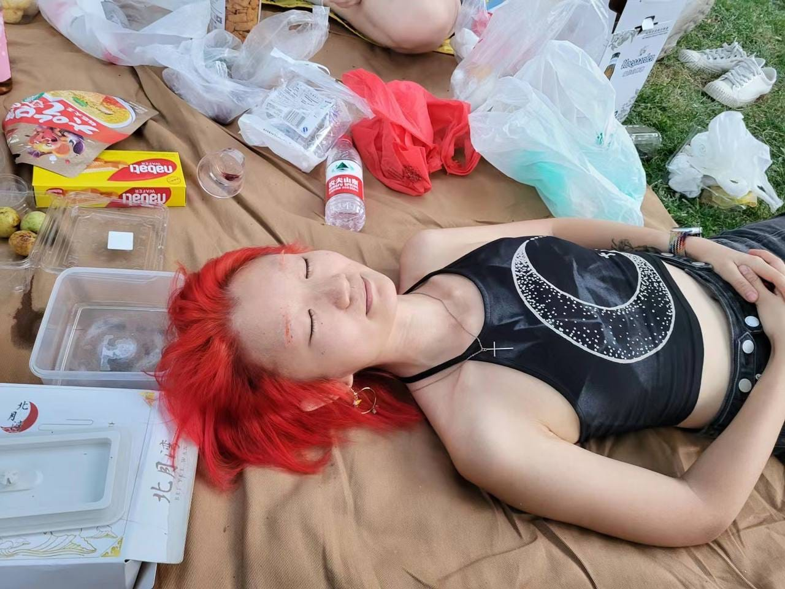
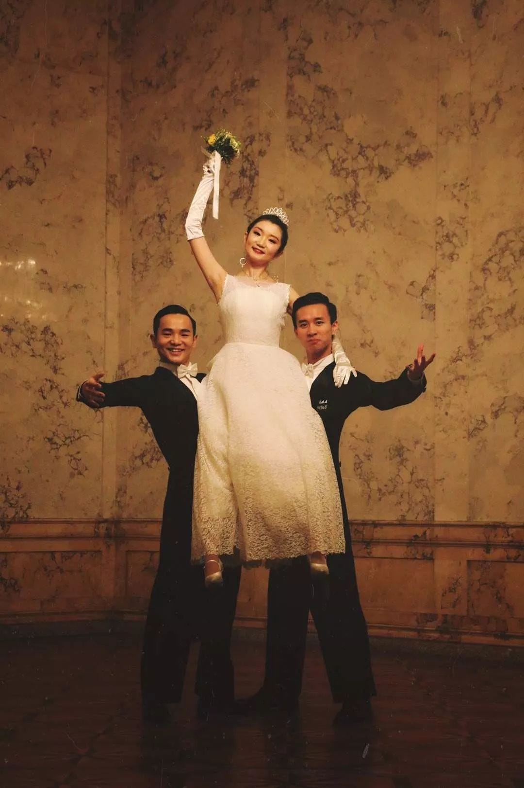
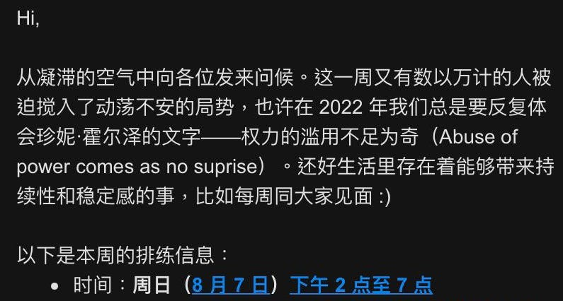
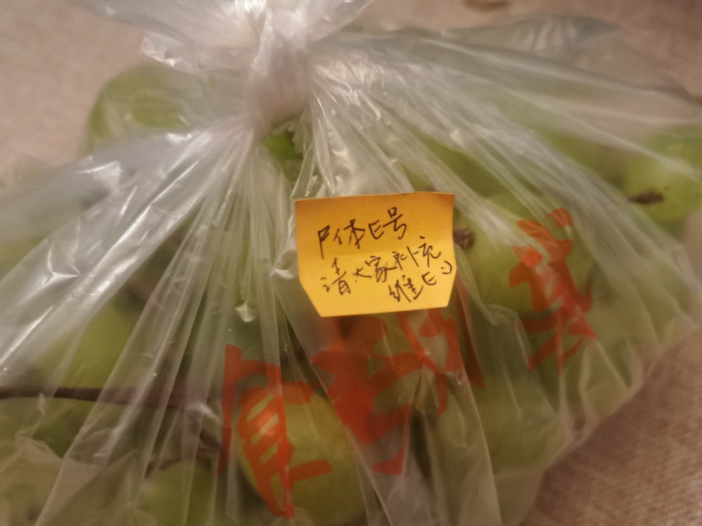
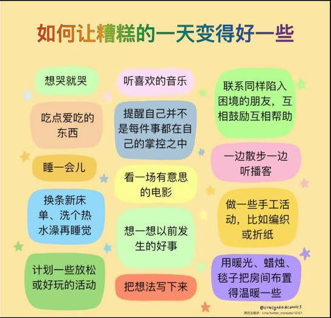
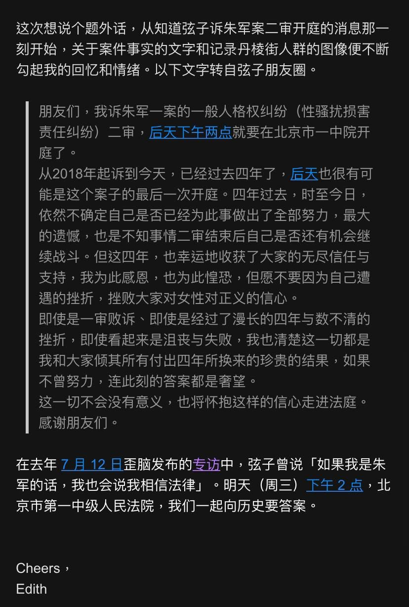

北京被捕者郭艺：红在革命蔓延前 - WOMEN我们
“她希望遮蔽之下的痛苦都能被看见，边缘的人们都能够发出自己的声音，每个人都是重要的。”

撰文 闻欣
编辑 雪山
她希望遮蔽之下的痛苦都能被看见，边缘的人们都能够发出自己的声音，每个人都是重要的。
郭艺，朋友们更熟知的名字是Edith。当她在三个月之前因为在一处公共厕所张贴四通桥勇士彭载舟原创的标语海报而被捕时，人们窃窃私语中提到的就是这个名字。
在北京一个主要是女生组成的文艺小社群中，她的消失很难不被人注意到；然而三个月以来，她的被捕并不为外界所知。
很多人是在她在为女权主义话剧《阴道之道》剧组在各种微信群里进行演员招募的时候，注意到“一个头像很酷的人”。
那就是Edith，剧组的统筹。她的头像背景是紫色的，画着一个戴墨镜头发色彩斑斓的女孩。见到她的时候，她也是一头红色短发，身形瘦削，利落地穿着挂脖吊带。她学过舞蹈，是清华国标队员，能给别人授课，也参加过许多大型比赛。
“第一眼看到她，觉得像一只优美的天鹅，也让人感觉（她）利落得能扛起整个世界的重量。”这是一名朋友的印象。

她是在2022年10月下旬消失的。那时候，被称为“白纸革命”的青年抗议尚未发生。她独自在四通桥勇者彭载舟的感召之下，做出了她的决定。
之前毫无征兆，照例是“一天似乎有48小时”的忙碌。以瘟疫为名的封控中，她还在四处打电话，为她工作的社会工作组织“木兰花开”的流动女工摄影工作坊遴选志愿者，一些人还没能等来面试结果，她就永远失联了。
有的人最后一次见到她，是在她家中举办的放映会，在国庆假期的末尾，看了一场《红在革命蔓延时》。大家都感觉到什么东西即将发生，但没有人知道Edith将会做什么。
剧组统筹
在一个以兴趣为纽带的群体中，大家其实对彼此个人的情况了解并不多，她们知道Edith大约是2019年从清华毕业的，好像还是学商科的，毕业却去了给流动女工组织文化活动的木兰花开做社工。
大多数人并不知道，作为户口在新疆的汉人，Edith曾经希望在深圳落户，而免掉籍贯带来的不便。
她说话总是轻轻柔柔的，一个她的朋友的形容是，像阳光下的白色婚纱。
她的一天似乎有48小时，社工的工作之外还要协调剧组场剧本编写、场地排练事宜。她工作的地方在昌平，离住的地方有三四十公里，排练的地方也不近，地铁一个小时。
剧 组成员对2022年的演出剧本做了许多改动，以更贴合议题中讨论的人群。有一幕叫月经，三个人物中的trans没找到人来演。Edith坚持让真正的 trans来出演，而不应该被其他身份的人代言。为了说服一个trans做演员，她从昌平坐地铁到房山，从北京的最北边到最南边，六七十公里。
有人记得她的评论：trans群体的可见度已经很低了。“她希望遮蔽之下的痛苦都能被看见，边缘的人们都能够发出自己的声音，每个人都是重要的。”

照料者
剧 组经常排练后聚餐喝酒。一次喝酒完太晚了，五个人到住在附近的一个朋友家里挤着睡下了。是一间在胡同里的老房子，很小，Edith直接躺地上了，还非常开 心地拍了照发到IG story上，朋友们打趣彼此是横尸五具。她定了早上六点的闹钟，朋友们醒来时她已经走了，留下了一串葡萄和一张纸条，“尸体E号请大家补充维E”。

慢慢地，大家知道她其实有双相情感障碍。但她总是别人情绪的照顾者。2022年8月中旬大家收到过她一封邮件：
“Hi， 这一周就要结束了，大家过的如何呢？最近听到不少身边的朋友们正在经历情绪波动，无论是大的气候还是周遭环境，似乎都在令我们被迫反复面对压力事件，被迫 习练自己的应对和修复能力。'如何让糟糕的一天变得好一些'？在邮件的最后我附上了一些自我照顾的主意，当你需要灵感时也许可以从这里开始尝试。”这些主 意包括“用暖光、蜡烛、毯子把房间布置得温暖一些”和“联系同样陷入困境的朋友，互相鼓励互相帮助”。

图：郭艺给大家寄的自我照顾小建议
她的工作邮件有效率，但是总会有类似的信息，细致地分享着她对四季流转的感受和对其他人的关心。

行动者
朋友们对她的印象是“行动力超强”。这种行动力并不是第一次给她带来麻烦。有人说起，当2022年上半年蓬蒿剧场的负责人王翔被多位女性举报性骚扰的时候，Edith是被警察送回来的，因为她直接前往剧场喷漆涂鸦。

这一次，她的行动力强到没有任何人知道她计划的时候，一切都已经发生了。
朋友们想象那一刻是怎么发生的：当警察去她的公寓搜查她打印的四通桥招贴时，一定也会看到房间里的彩虹旗。这一定让警察更确定她是“反动分子”-–—鉴于白纸抗议后的拘捕和审讯中他们对女权和lgbt议题的高度关注。她们知道，公寓也被警察强行清退了。
家属和律师守口如瓶，据说因为申请取保候审失败，她母亲的状况已经很不好了。
她 们事实上无从知道Edith的近况，只能在互相祝福新年快乐时鼓励彼此。她们说，毕竟批评防疫政策的罪名因为时过境迁也许已经不再成立，Edith一定能 在2023年前、春节前、冬天结束时被释放。然而三个月过去了，她还没被释放，并且杳无音讯。她们很担心，她的精神症状是不能停药的，她在看守所是否能得 到及时的医疗照顾。
再后来听到Edith的消息，就是她的红发被强行染成了黑色，还被剃成了寸头。有人想念着Edith，把自己的头发和眉毛也都染成了红色，也许这样会不那么难过。
“Edith没做错事，她是革命蔓延时的一抹红。Keep fighting the good fight。”
“Keep fighting the good fight”是Edith的Instagram 的签名。
Thanks for reading WOMEN我们's Substack! Subscribe for free to receive new posts and support my work.